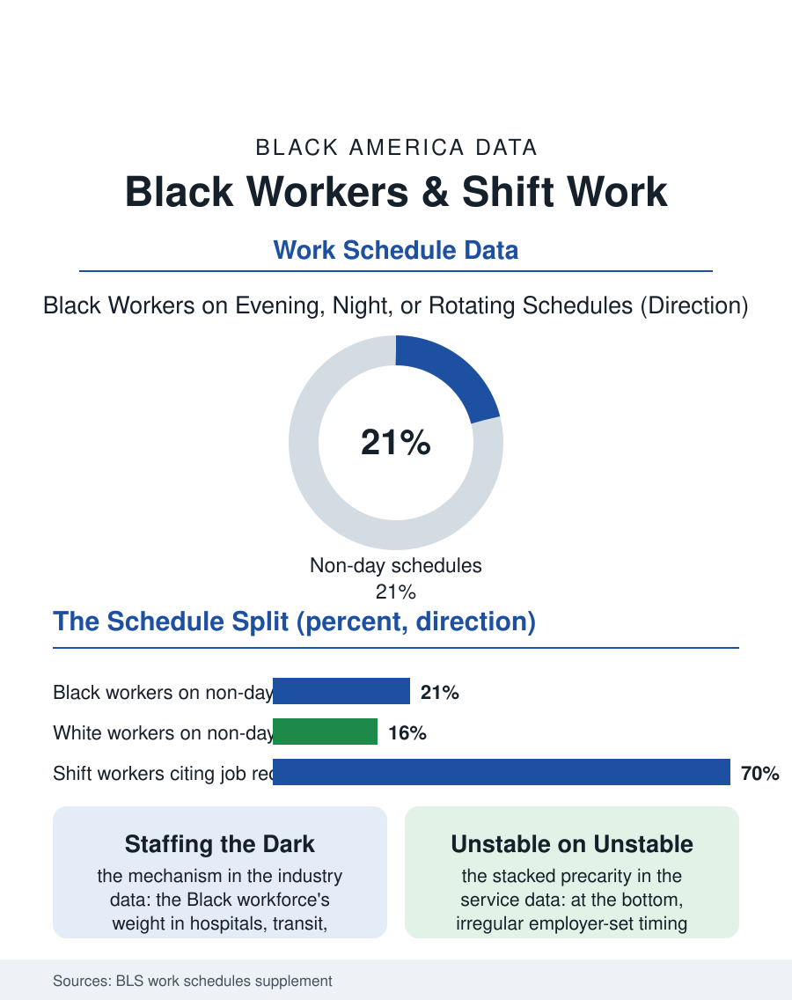

Black Employment
The Night Economy: Black Workers and Shift Schedules
One in five Black workers works nights, evenings, or rotating shifts, staffing the infrastructure the daylight is built on. The night file.

Roughly one in five Black workers works a non-daytime schedule, evenings, nights, rotating shifts, or irregular hours set by the employer, a share above the workforce average and concentrated in the industries, health care, transportation, warehousing, protective service, hospitality, that run around the clock. The Bureau of Labor Statistics' work schedule data make shift work a demographic variable with a racial distribution. This article reads the night file.
Who Works While Others Sleep
The schedule data sort by industry first and demography second, and the Black workforce's industry mix, its weight in the hospital systems' three-shift staffing, the transit and logistics networks, the security economy, and food service, produces its schedule profile mechanically: more evening and night work, more rotating schedules in the manufacturing and care sectors, more employer-set irregularity at the service economy's bottom. The reasons workers give the survey for the schedule split by voluntariness in the telling pattern: the shift differentials and the childcare arithmetic, a parent on nights tag-teaming with a partner on days to avoid the child care market's prices, are the chosen face, while the larger share report the schedule as the job's condition, not their preference. The student and second-job files intersect here, the night shift being the classic container for the worker whose day holds school or another job, and the multiple jobholders file's population is disproportionately a shift population. The age curve bends the expected way, the young overrepresented on the service economy's evenings, the prime-age on the institutional nights of the hospital and the plant, and the older shift worker a selected survivor of a schedule the body tolerates worse by the decade.
The Body and the Household Pay
The health literature on shift work is one of occupational medicine's most consistent: the night and rotating schedules carry elevated risks of the sleep disorders, the metabolic conditions, and the cardiovascular outcomes the health file tracks, through the circadian mechanism the researchers can demonstrate in the laboratory, and the Black shift workforce's disease profile bears the schedule's share of the blame in the disparity accounting. The household costs run in parallel: the shift worker's sleep happens in the household's noisy day, its quality in the studies a fraction of night sleep's, and the family's shared time, meals, evenings, the children's waking hours, is the schedule's other tax, paid by exactly the two-shift tag-team households whose childcare savings purchased it. The labor standards file is thin by international comparison: no federal premium mandate for night work, the differential a market and bargaining artifact, strongest in the unionized institutional settings, hospitals, transit, the public sector, where the Black shift workforce concentrates, and weakest in the private service economy where the irregular schedule meets the just-in-time scheduling software the retail and food files record, the shift's timing itself unstable week to week, a second precarity stacked on the first.
The Night Economy's Citizens
The file closes with the population the schedule creates: a shadow citizenry of the night economy, the nurses' aides and the warehouse pickers, the drivers and the guards, whose city at 3 a.m. is fully staffed and almost entirely unobserved by the day world's data collection, which surveys households at hours the night worker is asleep. Their civic trace runs thin for the same reason, the meetings and the school events scheduled against their sleep, a participation tax the civic files register without naming its cause. The reforms in the file are the scheduling laws of the fair workweek cities, the premium and predictability requirements spreading through the service economy's jurisdictions, and the health system's own reckoning with the twelve-hour rotations its staffing models require. The bureau counts one in five Black workers on the non-day schedule. The file's judgment is that the count describes an infrastructure: the hospitals that never close, the freight that moves at night, the buildings guarded and cleaned for the morning, are staffed disproportionately by Black workers whose schedules invert the civic day. The day world's convenience is their circadian cost, itemized in the health file, and the least the data can do, this file having done it, is record whose nights the daylight is built on. Their nights built it.
More in Black Employment
The Black Unemployment Rate: The Two-to-One Pattern
Black unemployment runs at roughly twice the White rate — 5.5 percent against 3.3 percent in annual averages — a ratio stable across five decades of federal data. How it is measured and why it persists.
Black Median Weekly Earnings: The 80-Cent Ratio
Black full-time workers earn a median of about $900 a week — roughly 80 cents for every dollar White workers earn. The BLS earnings data by group, gender, and occupation.
Black Labor Force Participation: Working at National Rates
Black labor force participation runs at roughly the national rate — and Black women participate at higher rates than White women. The BLS participation data.
Source: Bureau of Labor Statistics, Work Schedules and Work at Home supplement; American Time Use Survey schedule analyses.